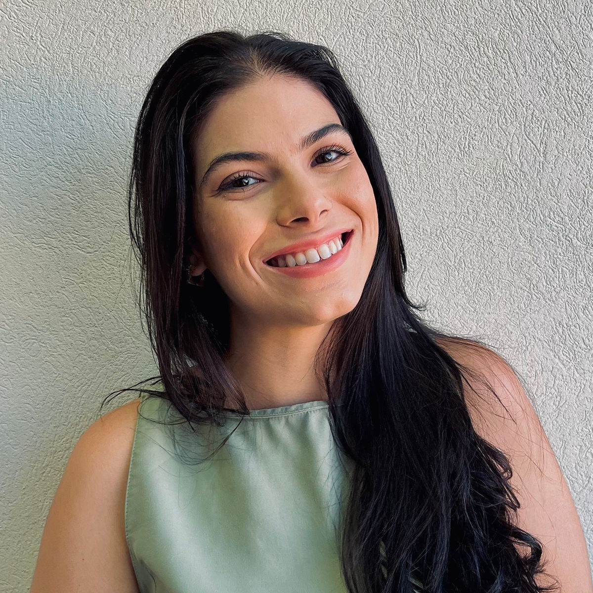

Sobre Mim
Bacharel em Direito, estudante de Sistemas de Informação e desenvolvedora em construção, apaixonada por cachorros salsicha e pela cor verde. Nascida e criada em Juiz de Fora/MG, sempre fui apaixonada por viajar, principalmente para fora do país. Conhecer novas culturas, olhar as janelinhas pela rua e pensar como é a vida daquelas pessoas, comer comidas diferentes (meu passeio preferido é o do mercado). Meu grande sonho, desde novinha, é ir morar na Europa. Enquanto ele não é realizado, tenho um gostinho através das viagens tão especiais que já fiz (e que ainda pretendo fazer). Aqui compartilho um pouco das histórias que vivi, das lembranças que guardo comigo.
